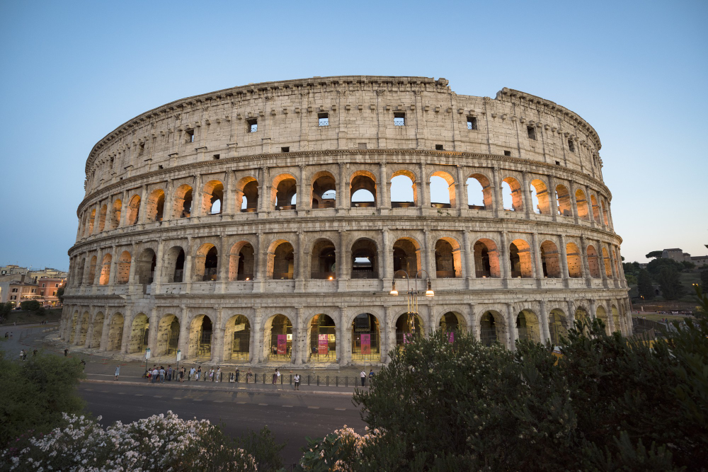
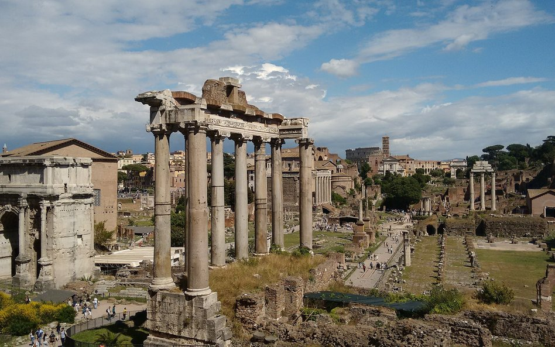
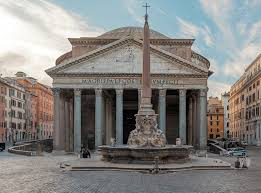
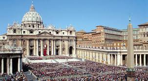
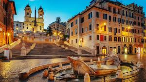

Rzym

Stolica i największe miasto Włoch, położone w środkowej części kraju nad rzeką Tyber i Morzem Śródziemnym, zarazem stolica regionu administracyjno-historycznego Lacjum (Lazio).Centrum administracyjne ma powierzchnię 1287 km² i liczbę ludności 2 825 661, będąc trzecim co do wielkości miastem Unii Europejskiej. Miasto Stołeczne Rzym ma 4 331 856 mieszkańców. Rzym jest metropolią o znaczeniu globalnym, a także dużym węzłem komunikacyjnym z jednym z największych międzynarodowych portów lotniczych w Europie, który obsługuje ponad 38 milionów pasażerów rocznie, rozbudowaną siecią autostrad i linii kolei dużych prędkości. Światowy ośrodek turystyczny z bardzo bogatymi zabytkami starożytności i średniowiecza (kościoły, bazyliki, Koloseum, pałace, akwedukty, fontanny i wiele innych budowli), niezwykle bogate muzea, nowoczesne osiedla mieszkaniowe na przedmieściach. W 1960 roku organizował Letnie Igrzyska Olimpijskie. W 2017 roku Rzym odwiedziło 9,5 mln turystów w ciągu roku. Znajdują się tu siedziby dwóch organizacji ONZ: organizacji do spraw Wyżywienia i Rolnictwa oraz Międzynarodowego Funduszu Rozwoju Rolnictwa.
Koloseum

Koloseum, znane pierwotnie jako Amfiteatr Flawiuszów, to najbardziej rozpoznawalny symbol starożytnego Rzymu i największy amfiteatr, jaki kiedykolwiek wzniesiono. Budowa tej monumentalnej konstrukcji rozpoczęła się w 70 roku n.e. z inicjatywy cesarza Wespazjana, a jej uroczyste otwarcie nastąpiło dziesięć lat później za panowania jego syna, Tytusa. Przez wieki obiekt służył jako arena krwawych igrzysk, walk gladiatorów, polowań na dzikie zwierzęta oraz widowiskowych naumachii, czyli rekonstrukcji bitew morskich, które mogły oglądać dziesiątki tysięcy widzów rozmieszczonych na piętrowych trybunach zgodnie ze statusem społecznym. Pod areną znajdowało się skomplikowane hypogeum – system podziemnych korytarzy, wind i klatek, umożliwiający nagłe pojawianie się wojowników i bestii na płycie areny. Mimo zniszczeń spowodowanych przez trzęsienia ziemi oraz wielowiekowe wykorzystywanie budowli jako kamieniołomu, Koloseum przetrwało do dziś jako arcydzieło rzymskiej inżynierii i jeden z siedmiu nowych cudów świata. Obecnie zwiedzanie obiektu wymaga imiennej rezerwacji biletów z dużym wyprzedzeniem, a turyści mogą zobaczyć nie tylko arenę, ale także odrestaurowane podziemia oraz najwyższe poziomy widokowe, z których roztacza się panorama na pobliskie Forum Romanum i Łuk Konstantyna.
Forum Romanum

Forum Romanum to serce starożytnego Rzymu, stanowiące przez wieki centrum polityczne, religijne i towarzyskie imperium. To właśnie tutaj, w dolinie między wzgórzami Kapitolem a Palatynem, wznoszono najważniejsze świątynie, bazyliki i łuki triumfalne, a na mównicy zwanej Rostra przemawiali najwięksi mówcy, tacy jak Cyceron. Spacerując po oryginalnym bruku drogi Via Sacra, można podziwiać pozostałości takich budowli jak Świątynia Saturna, Kuria (miejsce obrad senatu) czy monumentalny Łuk Septymiusza Sewera. Po wiekach świetności Forum popadło w zapomnienie i służyło jako pastwisko, by dopiero w XIX wieku zostać odkryte przez archeologów i udostępnione światu jako jedno z najbardziej fascynujących muzeów pod gołym niebem. Współcześnie zwiedzanie Forum Romanum odbywa się zazwyczaj w ramach jednego biletu łączonego z Koloseum i Palatynem, a najpiękniejszy widok na cały kompleks rozpościera się z tarasu widokowego na Kapitolu.
Panteon

Panteon w Rzymie to jedna z najlepiej zachowanych budowli starożytności, która od blisko dwóch tysięcy lat zachwyca swoją potęgą i genialnymi rozwiązaniami architektonicznymi. Obecny kształt świątyni nadany został przez cesarza Hadriana około 125 roku n.e., choć napis na portyku wciąż upamiętnia fundatora pierwszej budowli, Marka Agryppę. Najbardziej charakterystycznym elementem gmachu jest gigantyczna betonowa kopuła o średnicy 43,3 metra, która do dziś pozostaje największą na świecie konstrukcją z niezbrojonego betonu. Na jej szczycie znajduje się oculus – dziewięciometrowy otwór, będący jedynym źródłem światła, który jednocześnie odciąża konstrukcję i pozwala na odprowadzanie deszczówki przez system kanałów w posadzce. Budowla przetrwała wieki w niemal nienaruszonym stanie głównie dzięki przekształceniu jej w VII wieku w kościół Santa Maria ad Martyres. Obecnie Panteon pełni funkcję narodowego mauzoleum, w którym spoczywają wybitne postacie, takie jak malarz Rafael Santi oraz królowie Włoch.
Bazylika Św. Piotra

Bazylika św. Piotra w Watykanie to jedna z najważniejszych i największych świątyń chrześcijaństwa, wzniesiona według tradycji nad grobem apostoła Piotra, pierwszego papieża. Budowa obecnej renesansowo-barokowej struktury rozpoczęła się w 1506 roku z inicjatywy papieża Juliusza II i trwała aż 120 lat, angażując najwybitniejszych artystów epoki, takich jak Bramante, Rafael Santi, Michał Anioł oraz Bernini. Monumentalna świątynia imponuje swoimi wymiarami: ma ponad 211 metrów długości i może pomieścić do 20 tysięcy wiernych, a jej dominującym elementem jest potężna kopuła zaprojektowana przez Michała Anioła, sięgająca ponad 130 metrów wysokości. Wnętrze skrywa bezcenne arcydzieła, w tym poruszającą Pietę Michała Anioła oraz monumentalny, liczący blisko 29 metrów wysokości baldachim Berniniego wykonany z brązu, który znajduje się bezpośrednio nad ołtarzem papieskim i grobem św. Piotra. Przed bazyliką rozpościera się owalny Plac św. Piotra, otoczony słynną kolumnadą Berniniego, która symbolizuje otwarte ramiona Kościoła przyjmujące pielgrzymów.
Hiszpańskie schody

Schody Hiszpańskie (wł. Scalinata di Trinità dei Monti) to jedna z najbardziej ikonicznych atrakcji Rzymu, łącząca plac Hiszpański (Piazza di Spagna) z kościołem Trinità dei Monti. Powstałe w XVIII wieku schody liczą 135 lub 138 stopni i są miejscem wielu wydarzeń kulturalnych, w tym słynnych wiosennych pokazów kwiatów azalii. U podnóża schodów znajduje się barokowa fontanna Barcaccia („Brzydka Łódź”), zaprojektowana przez Pietro Berniniego i jego syna, Gian Lorenzo Berniniego. Nazwa schodów pochodzi od znajdującej się przy placu Ambasady Hiszpanii przy Stolicy Apostolskiej. Na szczycie schodów można podziwiać panoramę Rzymu, a w sąsiedztwie znajduje się dom, w którym mieszkał brytyjski poeta John Keats.